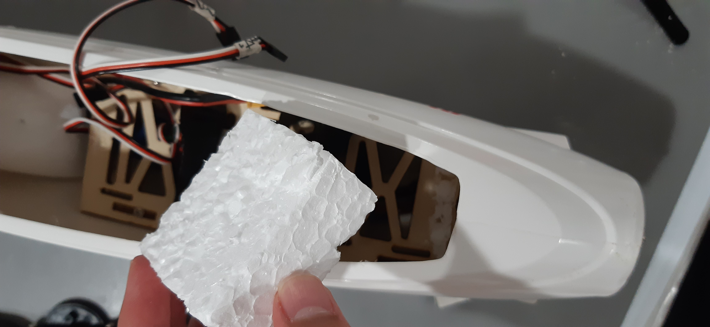

Plane Project Update | Fixing UART Communication Problems on SAMD11
Ok, I have been very busy at school, and I was also spending a lot of time fixing the brocken pieces from the last crash, which took MONTHS!!!
But now I’m back, and let’s see what I have in plan….
NEW SOFTWARE!! I developed new code for this test flight, and that is what I will be testing out!
So, as you probably read before, the aluminum rods got bent, and the wing compartment was broken. So, I had a fix for those.
But there was also another problem. The battery had slid out of its hold and had slammed into the motor shaft, causing a “firey” combustion!! The battery literally started buffing up and excreting smoke!! It was bad, so, to prevent this from happening in the future, I have added a foam block in the front:

I also made a bunch of changes to the flight computer soldering job, because a few years ago when I originally completed it, I did a “not so good job”, so I fixed some parts, and its better now.
I also have a big software update, that is actually why I am testing this.
for reference, here was the old code:
#include <Wire.h>
#include <Servo.h>
#define MIN_PULSE_LENGTH 1000 // Minimum pulse length in µs
#define MAX_PULSE_LENGTH 2000 // Maximum pulse length in µs
Servo a;
Servo e;
Servo r;
Servo esc;
int escPin = 5;
int aileronPin = 4;
int elevatorPin = 3;
int rudderPin = 2;
int ch1 = 8;
int ch2 = 7;
int ch3 = 9;
int ch4 = 6;
void setup() {
// put your setup code here, to run once:
Serial.begin(115200);
esc.attach(escPin, MIN_PULSE_LENGTH, MAX_PULSE_LENGTH);
a.attach(aileronPin);
e.attach(elevatorPin);
r.attach(rudderPin);
pinMode(2, OUTPUT);
pinMode(3, OUTPUT);
pinMode(4, OUTPUT);
pinMode(5, OUTPUT);
pinMode(6, INPUT);
pinMode(7, INPUT);
pinMode(8, INPUT);
pinMode(9, INPUT);
ESC_calibrate();
for (int i = 1000; i <= 1300; i+=5) {
esc.writeMicroseconds(i);
delay(50);
}
for (int i = 1300; i >= 1000; i-=5) {
esc.writeMicroseconds(i);
delay(50);
}
Serial.println("hello");
delay(1000);
}
unsigned long p1=0;
unsigned long p2=0;
unsigned long p3=0;
unsigned long p4=0;
unsigned long c1;
unsigned long c2;
unsigned long c3;
unsigned long c4;
void loop() {
// put your main code here, to run repeatedly:
/*esc.writeMicroseconds(readFilter(c3,3));
r.writeMicroseconds(readFilter(c4,4));
e.writeMicroseconds(readFilter(c2,2));
a.writeMicroseconds(readFilter(c1,1));*/
Serial.println(readFilter(readCH3(),3));
delay(5);
}
void ESC_calibrate() {
esc.writeMicroseconds(MIN_PULSE_LENGTH);
delay(500);
esc.writeMicroseconds(MAX_PULSE_LENGTH);
delay(500);
}
unsigned long readCH1() {
unsigned long duration;
duration = pulseIn(ch1,HIGH,25000);
return duration;
}
unsigned long readCH2() {
unsigned long duration;
duration = pulseIn(ch2,HIGH,25000);
return duration;
}
unsigned long readCH3() {
unsigned long duration;
duration = pulseIn(ch3,HIGH,25000);
unsigned long value = map(duration, 1000, 2000, 0, 255);
return value;
}
unsigned long readCH4() {
unsigned long duration;
duration = pulseIn(ch4,HIGH,25000);
return duration;
}
unsigned long readFilter(unsigned long current, int x) {
if (x == 1) {
unsigned long now = (.99*p1) + (.01*current);
p1 = current;
return now;
}
if (x == 2) {
unsigned long now = (.99*p2) + (.01*current);
p2 = current;
return now;
}
if (x == 3) {
unsigned long now = (.9*p3) + (.1*current);
p3 = current;
return now;
}
if (x == 4) {
unsigned long now = (.99*p4) + (.01*current);
p4 = current;
return now;
}
}
And below is the new code:
#include <IBusBM.h>
#include <Servo.h>
#include <Wire.h>
#define MIN_PULSE_LENGTH 1000 // Minimum pulse length in µs
#define MAX_PULSE_LENGTH 2000 // Maximum pulse length in µs
Servo a;
Servo e;
Servo r;
Servo esc;
int escPin = 5;
int aileronPin = 4;
int elevatorPin = 3;
int rudderPin = 2;
IBusBM ibus;
void setup() {
// put your setup code here, to run once:
Serial.begin(115200);
ibus.begin(Serial1,IBUSBM_NOTIMER);
esc.attach(escPin, MIN_PULSE_LENGTH, MAX_PULSE_LENGTH);
a.attach(aileronPin);
e.attach(elevatorPin);
r.attach(rudderPin);
pinMode(rudderPin, OUTPUT);
pinMode(elevatorPin, OUTPUT);
pinMode(aileronPin, OUTPUT);
pinMode(escPin, OUTPUT);
ESC_calibrate();
//for (int i = 1000; i <= 1300; i+=5) {
// esc.writeMicroseconds(i);
// delay(50);
//}
//for (int i = 1300; i >= 1000; i-=5) {
// esc.writeMicroseconds(i);
// delay(50);
//}
delay(1000);
}
void loop() {
// put your main code here, to run repeatedly:
ibus.loop();
//Serial.println(readChannel(1,0, 0 ,180));
writeESC();
writeA();
writeE();
writeR();
delay(10);
}
void ESC_calibrate() {
esc.writeMicroseconds(MIN_PULSE_LENGTH);
delay(500);
esc.writeMicroseconds(MAX_PULSE_LENGTH);
delay(500);
}
void writeESC() {
int val = readChannel(2,0,1000,2000);
esc.writeMicroseconds(val);
}
void writeA() {
int val = readChannel(0,0,0,180);
a.write(val);
}
void writeE() {
int val = readChannel(1,0,180,50);
e.write(val);
}
void writeR() {
int val = readChannel(3,0,10,180);
r.write(val);
Serial.println(val);
}
int readChannel(byte ch, uint16_t defaultVal, uint16_t startVal, uint16_t stopVal) {
uint16_t chVal = ibus.readChannel(ch);
return (int) map(chVal, 1000, 2000, startVal, stopVal);
}
This shift in how we read data packets from the radio receiver changed due a problem I hit, which is defined this this forum post.
The error I hit was actually super hard to debug (for me at the time). When I tried to use the IBusBM library (which is the recommended library for this) I would get this error:
no matching function for call to 'IBusBM::begin(UartClass&)
Let’s back up a bit here.
The radio receiver I have can output the data it receives via the UART protocol (which is basically Serial communication). Every Arduino has Serial, as you program it with USB. But I want a way to program and read at the same time, because if I only have 1 UART Bus, then I can only read from one channel at a time, which means I cannot have USB and the receiver at the same time.
Luckily, the Arduino Nano Every has multiple UART pins!!
So, I tried to use them with Serial1. And it gave the above error!!
Someone on the forum said this:
I haven't worked through the details, but the code compiles with MegaCoreX 2 set for the Nano Every.
I think the answer to the issue lies somewhere in the difference between the two cores (MegaCoreX, megaavr) and how Serial1 is defined.
\\\\
- cattledog
Which I then tried to fix. But it didn’t work.
It turns out that the SAMD11 Chip thats on board has certain timers that are needed for the Serial communication. So the special line that ended up fixing it was this, which says that there will be “no timer”:
ibus.begin(Serial1,IBUSBM_NOTIMER);
And now, once I have made all the mechanical fixes, and the frimware updates, I am ready for Test Flight #3!!!
Subscribe to Burak Ayyorgun
Get the latest posts delivered right to your inbox